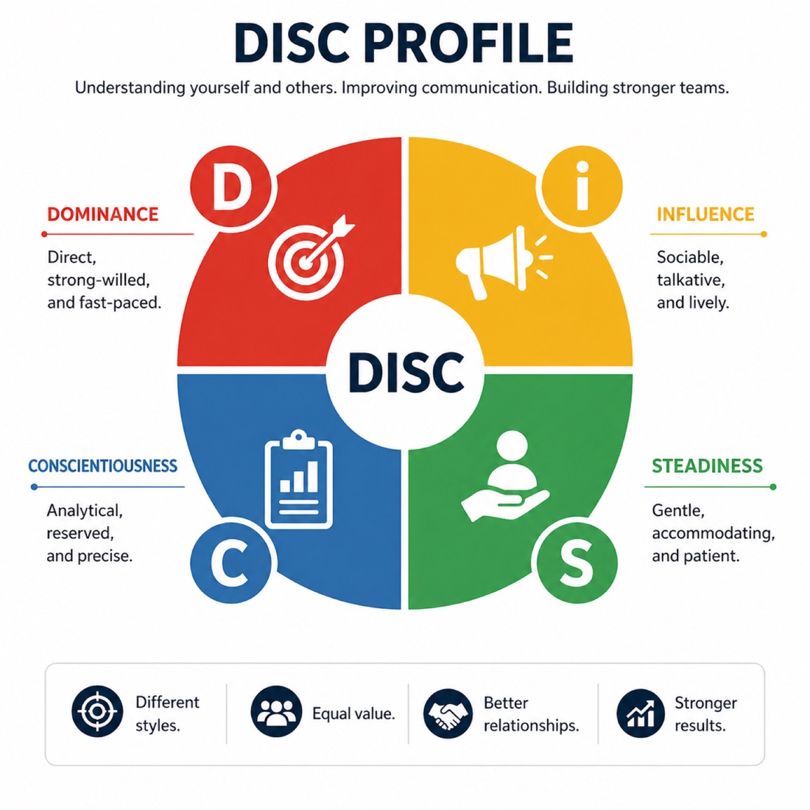

DISC is a practical, behavioral assessment tool that categorizes individuals into four primary styles: Dominance, Influence, Steadiness, and Conscientiousness. Because DISC focuses on observable actions, it is the premier choice for improving immediate communication, sales effectiveness, and conflict resolution. We teach participants how to "flex" their style to better connect with and influence others in real-time.

The Four Behavioral Styles of DISC
At Caroline Dawson International (CDI), we view DISC Profiling as the ultimate "language of behavior." While other tools explore deep-seated personality, DISC focuses on observable actions and communication styles.
Our goal is to help professionals bridge the gap between their natural style and the adaptive style required to thrive in a high-pressure, multi-generational workplace.
We move beyond the basic four-quadrant chart to explore the "Behavioral Versatility" of your team. Our workshop is designed to help participants identify where they fall on the spectrum of Task-Oriented vs. People-Oriented and Active vs. Reflective.
The impact of a CDI DISC workshop is felt immediately in the daily "rhythm" of the business:
The most tangible result is the ability of team members to "flex" their style. Instead of a "one-size-fits-all" approach, a salesperson learns to slow down for a "C" client, while a manager learns to be more direct and brief with a "D" executive.
Many workplace conflicts are simply "style clashes." The result of our training is a shift from personal judgment to behavioral understanding. Teams stop seeing a colleague as "rude" or "slow" and start seeing them as "High D" or "High S," allowing for more objective conflict resolution.
By mapping the entire team's DISC profiles, we reveal "Gaps" and "Clusters." The result is a strategic roadmap for hiring and task delegation — ensuring that the right styles are in the right roles to maximize collective output.
For those in client-facing roles, DISC is a superpower. The result is a heightened ability to "read" stakeholders and adjust pitches in real-time to build rapport and trust faster.
A flexible, high-impact delivery designed to fit your team's calendar and goals.
Half-day or full-day training workshop.
Live facilitated session, delivered onsite or virtually.
Workshop content and delivery can be tailored to meet your organisation's goals and audience profile.
Interactive group activities, role-play, and visual team-mapping exercises with expertly guided debriefs.
Organizations partner with CDI because we transform behavioral data into a practical workplace language that sticks. We don't just categorize people; we provide the "user manual" for better team collaboration.
Unlike deeper psychological tools, our experts use DISC to focus on what is visible. This allows teams to immediately recognize behavioral cues in colleagues and clients, leading to instant improvements in "pacing" and communication styles.
Our experts help organizations create a common vocabulary (Dominance, Influence, Steadiness, and Conscientiousness). This reduces "frictional loss" by depersonalizing tension — shifting the narrative from "they are being difficult" to "they have a different behavioral priority."
We go beyond self-discovery to teach Behavioral Adaptability. Participants learn how to "stretch" their natural style to meet the needs of others, which is particularly high-impact for sales teams, customer service, and leadership.
Our experts provide sophisticated "Group Culture Reports." We visualize where your team sits on the DISC quadrant, identifying if your culture is naturally "results-oriented," "people-focused," or "process-driven," and where the potential blind spots lie.
DISC is known for its simplicity and "stickiness." Our experts deliver the framework in a way that is easy to remember and apply, making it the ideal tool for large-scale organizational rollouts where you need everyone — from the front line to the C-suite — on the same page.
DISC is a behavioral profiling tool that measures four main traits: Dominance, Influence, Steadiness, and Conscientiousness. It focuses on observable behavior and communication styles, providing a practical "user manual" for how you respond to challenges, influence others, and handle workplace pace.
A half-day session (4 hours) focuses on Behavioral Awareness and individual profile debriefs. A full-day session (8 hours) shifts to Team Synergy, featuring role-playing and "Behavioral Stretching" exercises to master real-world workplace interactions.
Our experts recommend 10 to 50 participants for maximum engagement. However, the framework is highly scalable and can be adapted for small executive teams or large-scale departmental seminars.
Yes. We regularly deliver onsite training to minimize disruption. Our experts provide all workshop materials; we simply require a meeting space with audio-visual support (projector and screen).
Absolutely. We specialize in bespoke in-house runs tailored to your specific culture. Share your preferred dates and team size, and our experts will coordinate a customized workshop designed for your unique team dynamics.
Talk to our facilitators about scoping a DISC workshop for your organization — or download our free e-book to communication breakdowns first.